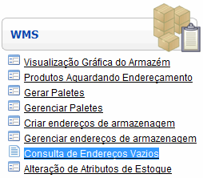
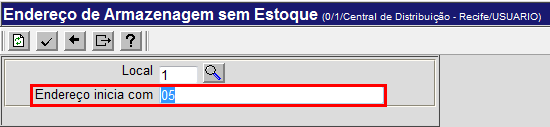
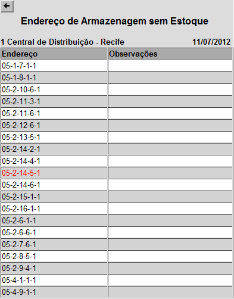

Consulta de Endereços Vazios [ Voltar ]Utilize este formulário para consultar todos os endereços de armazenagem sem estoque. Para acessar o formulário, vá ao menu "WMS" na página inicial e clique em "Consulta de Endereços Vazios". 
O sistema vai abrir a seguinte tela:  Para realizar a pesquisa dos endereços sem estoque, é necessário que, além do código de local (o local atual do usuário é preenchido automáticamente pelo sistema), o campo "Endereço inicia com" seja preenchido com pelo menos o número do módulo onde deseja que a pesquisa seja realizada. 
Observação: se o campo "Endereço inicia com" ficar em branco, a pesquisa abarcará todos os módulos do local e, por causa da grande quantidade dos dados, pode demorar tanto que um recado de timeout será mostrado. Depois que o campo "Endereço inicia com" tenha algum conteúdo, clique no botão 
Depois da consulta, clique no botão para retornar à página anterior. |
 para gerar a lista dos endereços. Após alguns segundos, será mostrada a seguinte tela:
para gerar a lista dos endereços. Após alguns segundos, será mostrada a seguinte tela: